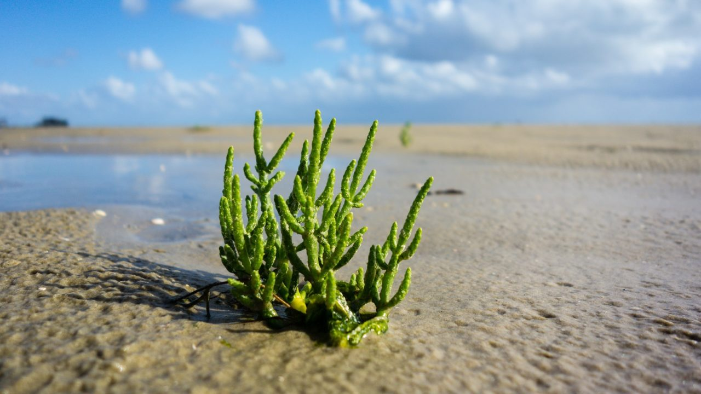

Agriculture in the Mediterranean region is increasingly facing major environmental challenges. Intensive farming systems based on monocultures and high resource consumption contribute to water scarcity, soil degradation, and biodiversity loss. Combined with the impacts of climate change, these pressures threaten agricultural sustainability, ecosystem resilience, and long-term food security. Addressing these challenges requires a transition toward farming systems that protect natural resources while remaining economically viable. Agroecology is widely recognized as a promising pathway toward sustainable agriculture. By integrating ecological principles into farming practices and promoting diversification at the crop, farm, and landscape levels, agroecological systems aim to enhance biodiversity, improve soil fertility, conserve water resources, and strengthen resilience to climate change. These goals are strongly aligned with major European policy priorities, including the European Green Deal and the EU Biodiversity Strategy for 2030. The SAGA project supports this transition through a participatory and science-driven approach. Living Labs will be established in Italy, Portugal, Tunisia, and Turkey, bringing together farmers, researchers, knowledge brokers, and policymakers to collaboratively test and develop innovative agroecological practices adapted to local contexts. A key focus of the project is the potential of halophytes, plants naturally adapted to saline environments. Among these, the genus Salicornia, native to the Mediterranean basin, represents a particularly promising crop due to its capacity to grow in highly saline soils unsuitable for conventional agriculture. Salicornia can contribute to soil restoration, water conservation, and the resilience of agricultural systems in degraded and saline-prone areas. To unlock this potential, SAGA will conduct an integrated genotyping and phenotyping program on Salicornia populations collected across the Mediterranean region. Using DNA sequencing technologies, the project will analyze genetic variability and clarify species identification among populations sampled in Italy, Portugal, Tunisia, and Turkey. In parallel, phenotypic characterization will evaluate key traits such as salt accumulation capacity, growth dynamics, biomass production, and biochemical composition. By integrating genomic and phenotypic data, SAGA aims to identify Salicornia species and genotypes best suited to improve soil quality, enhance water retention, and support sustainable agriculture in saline environments.
Investigate plant–microbe interactions.
Develop sustainable crop improvement strategies.
Apply molecular tools to understand biological mechanisms.
Project coordination and management.
Experimental research and data generation.
Data analysis and modelling.
Dissemination and outreach.
Scientific articles, datasets and reports will be listed here.
Project updates, conferences and achievements.
Email: your.email@institution.eu